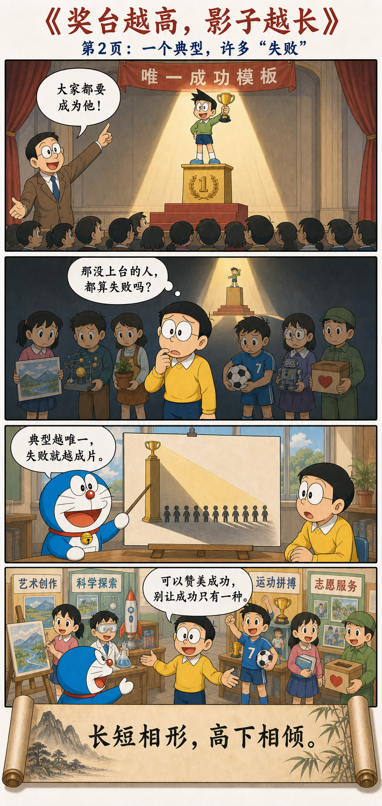
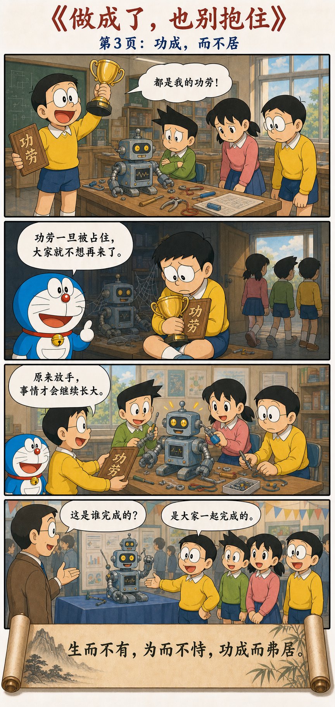

美与不美，在命名的一刻同时出现
天下皆知美之为美，斯恶已；
皆知善之为善，斯不善已。
故有无相生，难易相成，
长短相形，高下相倾，
音声相和，前后相随。
是以圣人处无为之事，行不言之教；
万物作焉而不辞，
生而不有，为而不恃，功成而弗居。
夫唯弗居，是以不去。
When everyone under heaven recognizes beauty as beauty, ugliness has already appeared; when everyone recognizes goodness as goodness, what is not good has also appeared. Thus being and nonbeing give rise to each other; difficult and easy complete each other; long and short reveal each other; high and low depend on each other; tone and voice harmonize with each other; before and after follow each other. Therefore the sage handles affairs without forcing them and teaches without relying on words. All things arise, yet the sage does not turn away from them; gives them life without possessing them; acts without depending on the action; completes the work without dwelling in the achievement. Precisely because the sage does not dwell in it, the achievement does not disappear.
通行本之间有“长短相较／相形”“万物作焉而不辞／不为始”等文字差异，但这一章的主线很稳定：对立在关系中显现，作为不必变成占有，功成不必变成居功。
Received editions differ in phrases such as “long and short compare with one another” or “take shape through one another,” and in the line about the arising of all things. The chapter’s main thread remains stable: opposites appear through relationship; action need not become possession; achievement need not become a claim to credit.
先看见关系，再决定怎样行动
天下人一旦共同规定什么叫美，“不美”也随之产生；一旦规定什么叫善，“不善”也同时有了位置。长与短、高与低、难与易，都不是孤立的东西，而是在比较中彼此显现。
Once people agree on what counts as beautiful, “not beautiful” appears with it; once goodness is defined, a place is created for “not good.” Long and short, high and low, difficult and easy are not isolated things—they become visible through comparison.
因此，圣人不急着把自己的意志压到万物身上，而是给事情发生的条件。他创造，却不据为己有；行动，却不靠行动抬高自己；事情完成了，也不把功劳牢牢占住。
The sage therefore does not rush to press a private will upon the world, but creates the conditions in which things can happen. The sage creates without possessing, acts without using action to elevate the self, and completes the work without holding tightly to the credit.
正因为他不把功劳变成私产，功劳反而不会离开他。这不是消极退场，而是一种能让事情继续生长的领导方式。
Because the sage does not turn achievement into private property, the achievement does not leave. This is not passive withdrawal, but a form of leadership that allows the work to keep growing.
从一把尺子，到功成不居



很多对立，是一把尺子量出来的
美之所以成为美，是因为旁边出现了“不美”；长之所以成为长，是因为它正与短相比较。如果所有人的身高完全相同，“高个子”这个概念就失去了意义。
Beauty becomes beauty because “not beautiful” appears beside it; length becomes long because it is being compared with shortness. If everyone were exactly the same height, the idea of a “tall person” would lose its meaning.
老子不是说美丑、善恶毫无区别。他提醒的是：当人把一个相对尺度固定成绝对标准时，也就同时制造了标准的反面，而且很容易忘记这两端原本来自同一次划分。
Laozi is not saying that beauty and ugliness, good and bad, have no distinction. He is reminding us that when a relative measure is fixed as an absolute standard, its opposite is created at the same time—and we easily forget that both ends came from the same act of division.
当你给某个事物树立一个绝对标准时，也就同时制造出了它的反面。
The moment you establish an absolute standard for something, you also manufacture its opposite.
可以宣传成功，但不要让成功只剩一种
清华大学特等奖学金设立于1989年，是学校授予在校学生的最高奖学金荣誉。2025年本科生评选中，34名申报者经过多轮评审后有15人进入公开答辩。学校对它的官方定位，是展示成长故事，并引导全面发展、个性发展与多元成长。
Established in 1989, Tsinghua University’s Top Grade Scholarship is the university’s highest scholarship honor. In the 2025 undergraduate selection, fifteen of thirty-four applicants advanced through several rounds to the public presentation. The university officially describes the award as a way to share stories of growth and encourage well-rounded, individual, and diverse development.
问题不在于学校能不能奖励优秀，也不在于获奖者是否值得敬佩。真正值得警惕的是传播方式：如果每年只把少数人的峰值履历放到聚光灯中央，把它包装成“清华学生应该成为的样子”，一个极端成功模板便可能在无形中把更多普通而真实的成长定义为不足。
The problem is neither whether a university may reward excellence nor whether the winners deserve admiration. The danger lies in how the story is told. If a few peak résumés alone occupy the spotlight and are presented as what every Tsinghua student should become, an extreme model of success may quietly redefine a far larger range of ordinary, genuine growth as inadequacy.
特奖本来可以是一扇窗，让人看见不同的人怎样成长；它也可能被观看者误读成一把尺，用来丈量所有人的价值。宣传成功没有错，但若典型变成唯一典型，榜样就会从“提供可能”滑向“规定人生”。
The scholarship can be a window through which people see many ways of growing; it can also be misread as a ruler for measuring everyone’s worth. There is nothing wrong with celebrating success. But when an example becomes the only example, it shifts from revealing possibility to prescribing a life.
当美成为规定，模仿就代替了生长
《庄子·天运》中，西施因心口疼而皱眉，旁人仍觉得她美。同里的丑人只看见“皱眉很美”这个结果，便也捧心皱眉，结果反而让人躲避。
In the “Revolution of Heaven” chapter of the Zhuangzi, Xi Shi frowns because of pain, yet people still find her beautiful. An unattractive woman from the same village notices only the result—“frowning is beautiful”—and imitates the gesture, causing people to flee instead.
她的问题不是不够努力，而是把一个人的自然状态抽成了普遍标准。美本来是一种具体感受，标准化以后却变成必须服从的姿势。人不再问自己是否舒展，只问自己是否像那个被选中的典型。
Her problem is not insufficient effort, but turning one person’s natural expression into a universal standard. Beauty begins as a concrete experience; once standardized, it becomes a posture everyone must obey. People stop asking whether they are at ease and ask only whether they resemble the chosen model.
对立不仅相互定义，也会相互转化
“有无相生，难易相成”不只是静止的比较。今天的困难可能训练出明天的能力，今天的顺利也可能遮住将来的风险。一个人暂时落后，未必永远落后；暂时站在高处，也不等于永远安全。
“Being and nonbeing give rise to each other; difficult and easy complete each other” describes more than a static comparison. Today’s difficulty may train tomorrow’s ability, while today’s ease may conceal tomorrow’s risk. Falling behind for a time does not mean falling behind forever; standing high for a time does not guarantee lasting safety.
塞翁失马的故事正是如此：失马带回群马，得马又使儿子坠伤，腿伤后来却让儿子免于战死。它不是让人麻木地说“一切都无所谓”，而是提醒我们，不要用眼前的一小段经历替整件事情盖棺定论。
The story of the old man who lost his horse follows this pattern: the lost horse returns with a herd; the new horses lead to his son’s injury; the injury later saves the son from dying in war. The point is not that nothing matters, but that a brief episode should not become a final judgment on the whole event.
无为不是不做，而是不让自我遮住事情
老子说完“处无为之事”，紧接着便说“生而不有，为而不恃，功成而弗居”。可见圣人并非没有行动：他创造、帮助、组织，也确实完成事情。
Immediately after speaking of “acting without forcing,” Laozi says: “give life without possessing; act without depending on the action; complete the work without dwelling in it.” The sage is clearly active—creating, helping, organizing, and completing real work.
“无为”去掉的不是行动，而是多余的自我表演：为了证明权威而干预，为了留下痕迹而改革，为了占有成果而控制别人。真正高级的作为，是理解事物自身的结构，然后只在必要处轻轻推动。
What non-forcing removes is not action, but unnecessary performance of the self: intervening to prove authority, reforming merely to leave a personal mark, or controlling others in order to possess the result. Mature action understands the structure of things and applies a light touch only where it is needed.
成熟的领导，不必靠折腾证明存在
汉初曹参任齐相，向盖公请教治理。盖公告诉他：“治道贵清静，而民自定。”曹参后来接替萧何任丞相，大体沿用已有制度，不为了显示聪明而频繁改弦更张。
When Cao Shen served as chancellor of Qi in the early Han, he consulted Master Gai, who told him that good government values clarity and stillness, allowing the people to settle themselves. Later, succeeding Xiao He as imperial chancellor, Cao largely preserved established institutions instead of constantly changing direction to display his cleverness.
无为在这里不是撒手不管，而是先承认：有些秩序已经有效，有些恢复需要时间。普通领导总想说“我来了，一切都要不同”；成熟的领导先问：“我此刻的干预，究竟会改善事情，还是只会证明我在这里？”
Here, non-forcing is not neglect. It begins by recognizing that some institutions already work and some recovery simply takes time. An ordinary leader declares, “Now that I am here, everything must change.” A mature leader first asks, “Will my intervention improve the situation, or merely prove that I am present?”
顺着结构做事，比命令世界屈服更有效
大禹治水的传说把两种行动方式放在一起：一味筑堤堵水，是要求水服从人的意志；顺着山川地势疏导水流，则是先理解水的方向，再为它打开道路。
The legend of Yu controlling the floods places two kinds of action side by side. Building barriers alone demands that water submit to human will; channeling the flow along the terrain first understands where water moves and then opens a path for it.
这不是放任洪水，而是更深入地参与。人在做事，但不把世界当成必须被征服的对象；力量仍然存在，只是不再与规律硬碰硬。
This is not abandoning the flood, but participating more intelligently. Human beings still act, yet no longer treat the world as an object that must be conquered. Power remains, but it no longer collides blindly with the grain of reality.
功劳一旦成为私产，就开始失去生命
一个人越反复强调自己的功劳，功劳越容易受到质疑。因为居功意味着，他开始把公共成果变成个人财产：没有我，你们什么也做不了；既然我有功，我就应该永远拥有控制权。
The more insistently someone advertises personal credit, the more that credit invites doubt. Claiming achievement turns a common result into private property: without me, none of you could have done anything; because I succeeded, I should possess control forever.
老子给出一个反直觉的答案：“夫唯弗居，是以不去。”不占住功劳，功劳反而留下。真正优秀的老师未必被学生天天挂在嘴边，但学生的判断、勇气与人生已经被他改变。影响不需要被占有，才可能继续流动。
Laozi offers a counterintuitive answer: precisely because one does not dwell in the achievement, it does not disappear. A truly excellent teacher may not be mentioned every day, yet the student’s judgment, courage, and life have already changed. Influence can continue to move only when it is not possessed.
看见对立，但不把世界钉死在对立上
第二章不是要求我们取消审美、取消善恶、取消奖励，也不是让领导者什么都不做。它要求的是一种分寸：知道标准有用，也知道标准会制造阴影；能够行动，也知道什么时候应当退后一步。
Chapter 2 does not ask us to abolish taste, moral distinctions, or awards, nor does it ask leaders to do nothing. It asks for proportion: know that standards are useful, and know that they cast shadows; be able to act, and know when to step back.
看见对立，却不被对立困住；
有所作为，却不强行操纵；
成就他人，却不占有他人；
做成事情，却不把自己供在功劳簿上。
See opposites without becoming trapped by them. Act without forcing. Help others flourish without possessing them. Complete the work without placing yourself upon the altar of achievement.